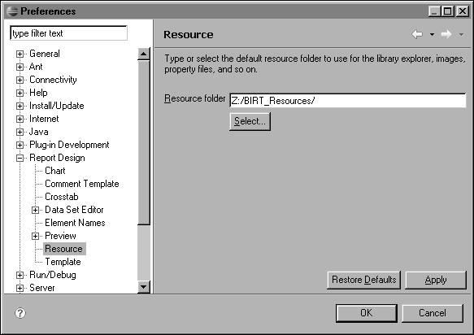
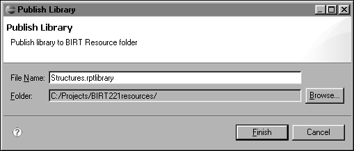
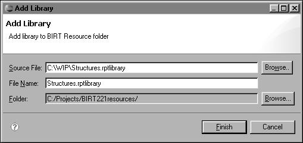

Building a Shared Report Development Framework
Previous sections describe how to create and use data sources and data sets and lay out and format report items. A single report developer with a requirement for only a few reports can use these approaches effectively. For a larger project, either one with more developers or one that requires more reports, many designs need to use the same elements or layouts. In these cases, manual techniques are cumbersome. Developing the same components repeatedly wastes time and is prone to errors. Even if you use the copy-and-paste features of BIRT Report Designer, a report design does not provide convenient access to standard elements and layouts.
BIRT provides the following solutions for designing reports that must conform to standards, including using common design elements and data sources:
This type of file stores customized report features, such as data sources, data sets, visual report items, styles, and master pages. Use a library in a report design to access the customized report elements. You can use multiple libraries in a single report design. By using multiple libraries, you can separate the styles and functionality that different projects or processes need.
This type of file provides a structure for a standard report layout. BIRT Report Designer provides a set of standard templates, such as Simple Listing and Grouped Listing report templates. A template can contain visual report items that appear in the report’s layout, data sources and data sets, and master page layouts. A template can also use one or more libraries in the same way that a report design does.
BIRT Report Designer uses the resource folder as a repository for libraries. This folder should be one that all report developers can access, such as a directory on a shared network drive. The location of the resource folder is specified in the Preferences page, which you access by choosing Windows→Preferences from the main menu, then choosing the Report Design Resource item, as shown in Figure 19‑1. You can browse to or type the name of your resource folder, then choose OK. BIRT Report Designer then uses this location to display libraries and other resources in Library Explorer.

If you have a large number of libraries, you can use subfolders to organize the libraries in a logical way. For example, the \\SharedServer\Resource\General folder can contain the general libraries, and \\SharedServer\Resource\Finance can contain the Finance libraries.
To place a library into the resource folder, you can publish a library from your current workspace or you can add a library from an external location. You can also use standard file system commands to copy your library files to the resource folder. Make sure that your library has a meaningful file name because BIRT Report Designer displays this name to the report developers who use the resource folder.
|
3
|
On Publish Library, as shown in Figure 19‑2, make changes to the file name and folder. For example, change the file name of the library if you need to make the name more meaningful. Use Browse if you want to place the library in a subfolder of the resource folder. Choose Finish.
|


|
4
|
On the context menu in Library Explorer, choose Refresh. The new library appears in the list of available libraries.
|